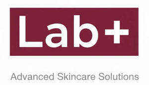

Trade Mark Journal No.2026/012 20 March 2026
UK00004339083 11 February 2026 (3)

- Class 3
- Cosmetics; Skincare cosmetics; Moisturisers [cosmetics]; Cosmetics and cosmetic preparations; Skin fresheners [cosmetics]; Anti-aging moisturizers used as cosmetics; Organic cosmetics; Lip cosmetics; Non-medicated cosmetics; Skin moisturizers used as cosmetics; Natural cosmetics; Cosmetics preparations; Cosmetics in the form of lotions; Facial creams [cosmetics]; Beauty care cosmetics; Suncare lotions [for cosmetic use]; Body creams [cosmetics]; Skin care cosmetics; Fluid creams [cosmetics]; Suntan lotion [cosmetics]; Cosmetics in the form of creams; Cosmetics for use on the skin; Cosmetic moisturisers; Sunscreens [for cosmetic use]; Cosmetic creams and lotions; Body and facial creams [cosmetics]; Sunscreen creams [for cosmetic use]; Body care cosmetics; Sunscreen [for cosmetic use]; Creams (Cosmetic -); Cosmetic creams; Cosmetic skin fresheners; Cosmetics in the form of oils; Beauty lotions; Cosmetic suntan lotions; Perfume oils for the manufacture of cosmetic preparations; Skin care lotions [cosmetic]; Anti-aging creams [for cosmetic use]; Sun protecting creams [cosmetics]; Anti-ageing creams [for cosmetic use]; Skin cleansers [cosmetic]; Skin creams [cosmetic]; Skin creams [for cosmetic use]; Moisturising skin lotions [cosmetic]; Cosmetic creams for the skin; Body and facial gels [cosmetics]; Cosmetic facial lotions; Facial lotions [cosmetic]; Lotions for cosmetic purposes; Facial creams [cosmetic]; Facial creams [for cosmetic use]; Cosmetic preparations; Facial cleansers [cosmetic]; Facial moisturisers [cosmetic]; Facial cream [for cosmetic use]; Cosmetic skin enhancers; Serums for cosmetic purposes; Cosmetic tanning preparations; Cosmetic hair lotions; Cleansing creams [cosmetic]; Facial scrubs [cosmetic]; Lip coatings [cosmetic]; Skin cream [for cosmetic use]; Skin whitening preparations [cosmetic]; Anti-ageing serums for cosmetic purposes; Cosmetic sun-protecting preparations; Cosmetic sunscreen preparations; Cosmetic facial packs; Facial packs [cosmetic]; Cosmetic suntan preparations; Eyelashes (Cosmetic preparations for -); Cosmetic preparations for eyelashes; Cosmetic hand creams; Skin toners [cosmetic]; Skin care creams [cosmetic]; Cosmetic creams for skin care; Gels for cosmetic purposes; Cosmetic sun-tanning preparations; Skin care (Cosmetic preparations for -); Cosmetic preparations for skin care; Skin conditioning creams for cosmetic purposes; Ointments for cosmetic use; Moisturising gels [cosmetic]; Softening cleanser [cosmetic]; Sun creams [for cosmetic use].
BEAUTY CARE GLOBAL LIMITED LIABILITY COMPANY
Representative: Hetasveeben Vanapariya